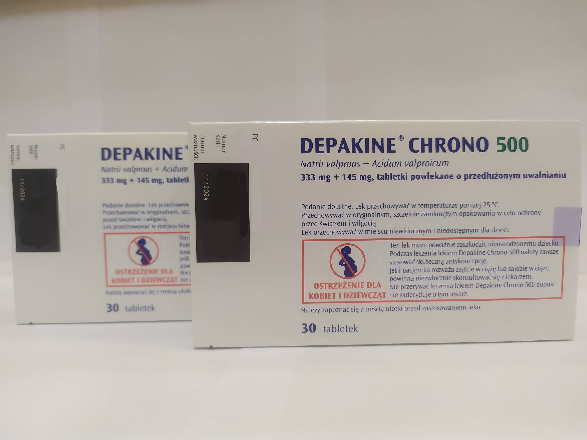

Контактна інформація:
Ціна: 400 грн/уп.
В наявності
Виробник: Польща
Ціна: 400 грн/уп.
В наявності
Саме в FarmItal ви можете купити Депакін хроно в Україні, Гарантовано Якісний!
Доставка Depakine Chrono здійснюється транспортними компаніями, терміни виконання замовлення обумовлюються менеджером Фармітал. Ви можете замовити таблетки Депакін Хроно у містах: Одеса, Херсон, Чернігів, Сєверодонецьк, Бердянськ, Бровари, Дніпро, Вінниця, Київ, Слов'янськ, Полтава, Краматорськ, Біла Церква, Кам'янське, Маріуполь, Чернівці, Олександрія, Кам'янець-Подільський, Львів, Запоріжжя, Кропивницький, Житомир, Івано-Франківськ, Суми, Черкаси, Костянтинівка, Мелітополь, Кривий Ріг, Рівне, Луцьк, Нікополь, Павлоград, Ужгород, Кременчук, Лисичанськ, Хмельницький, Тернопіль, Харків, Миколаїв, а також в інших населених пунктах України.
Таблетки.
Основним показанням до застосування препарату Депакін Хроно® 500 мг, бажано як монотерапії, є первинна генералізована епілепсія: малі епілептичні напади/ абсансна епілепсія, масивні білатеральні міоклонічні судоми, великі напади епілепсії з міоклонією або без неї, фотосенситивні форми епілепсії.
Також препарат Депакін Хроно® 500 мг як монотерапія або в комбінації з іншими протиепілептичними засобами є ефективним при таких захворюваннях:
Завдяки лікарській формі Хроно (пролонгована дія) добову дозу препарату можна застосовувати за один прийом. В ідеалі препарат слід приймати на початку прийому їжі. Найчастіше слід застосовувати такі добові дози:
Самолікування може бути шкідливим для вашого здоров'я! Перед початком лікування зверніться до вашого лікаря!!
Побічні реакції розподілені за системою органів, частота їх виникнення визначена таким чином: дуже часто ≥ 10 %; часто ≥ 1 та < 10 %, нечасто ≥ 0,1 % та < 1 %; рідко ≥ 0,01 % та < 0,1 %; дуже рідко < 0,01 %, невідомо (не можна визначити на основі наявних даних). Вроджені, родинні та генетичні розлади. Вроджені вади розвитку та порушення розвитку нервової системи (див. розділ «Особливості застосування» та «Застосування у період вагітності або годування груддю»). Розлади з боку крові та лімфатичної системи.Часто: анемія, тромбоцитопенії. Повідомлялося про випадки дозозалежної тромбоцитопенії, які, як правило, виявлялися у систематичному порядку і не мали жодних клінічних наслідків. У пацієнтів з асимптомною тромбоцитопенією просте зниження дози лікарського засобу, якщо можливо, з урахуванням рівня тромбоцитів і контролю захворювання, зазвичай призводить до усунення тромбоцитопенії.
При плазмових концентраціях, вищих у 5-6 разів від терапевтичного максимуму, можливе виникнення нудоти, блювання та запаморочення. Ознаки гострого масивного передозування зазвичай включають такі: поверхнева або глибока кома, м’язова гіпотонія, гіпорефлексія, міоз, розлади дихальної функції, метаболічний ацидоз, артеріальна гіпотензія, циркуляторний колапс/шок. Траплялися випадки, коли масивне передозування закінчувалося летальним наслідком. Однак прогноз при передозуванні зазвичай сприятливий.
Зберігати у недоступному для дітей місці.Зберігати в оригінальній упаковці при температурі не вище 25 °С.